Introduction
DDSAnalytics is an analytics company that specializes in talent management solutions for Fortune 100 companies. Talent management is defined as the iterative process of developing and retaining employees. It may include workforce planning, employee training programs, identifying high-potential employees and reducing/preventing voluntary employee turnover (attrition). To gain a competitive edge over its competition, DDSAnalytics is planning to leverage data science for talent management. The executive leadership has identified predicting employee turnover as its first application of data science for talent management. Before the business green lights the project, they have tasked the data science team to conduct an analysis of existing employee data.
YouTube: https://youtu.be/akFRgl3ZXJs
Shiny: https://data-science-hw.shinyapps.io/EmployeeShiny/
Data set overview
There are 870 obs. of 36 variables. Among the 36 variables, 9 are categorical factors, 27 are numeric variables.
No missing values in data set.
## 'data.frame': 870 obs. of 36 variables:
## $ ID : int 1 2 3 4 5 6 7 8 9 10 ...
## $ Age : int 32 40 35 32 24 27 41 37 34 34 ...
## $ Attrition : Factor w/ 2 levels "No","Yes": 1 1 1 1 1 1 1 1 1 1 ...
## $ BusinessTravel : Factor w/ 3 levels "Non-Travel","Travel_Frequently",..: 3 3 2 3 2 2 3 3 3 2 ...
## $ DailyRate : int 117 1308 200 801 567 294 1283 309 1333 653 ...
## $ Department : Factor w/ 3 levels "Human Resources",..: 3 2 2 3 2 2 2 3 3 2 ...
## $ DistanceFromHome : int 13 14 18 1 2 10 5 10 10 10 ...
## $ Education : int 4 3 2 4 1 2 5 4 4 4 ...
## $ EducationField : Factor w/ 6 levels "Human Resources",..: 2 4 2 3 6 2 4 2 2 6 ...
## $ EmployeeCount : int 1 1 1 1 1 1 1 1 1 1 ...
## $ EmployeeNumber : int 859 1128 1412 2016 1646 733 1448 1105 1055 1597 ...
## $ EnvironmentSatisfaction : int 2 3 3 3 1 4 2 4 3 4 ...
## $ Gender : Factor w/ 2 levels "Female","Male": 2 2 2 1 1 2 2 1 1 2 ...
## $ HourlyRate : int 73 44 60 48 32 32 90 88 87 92 ...
## $ JobInvolvement : int 3 2 3 3 3 3 4 2 3 2 ...
## $ JobLevel : int 2 5 3 3 1 3 1 2 1 2 ...
## $ JobRole : Factor w/ 9 levels "Healthcare Representative",..: 8 6 5 8 7 5 7 8 9 1 ...
## $ JobSatisfaction : int 4 3 4 4 4 1 3 4 3 3 ...
## $ MaritalStatus : Factor w/ 3 levels "Divorced","Married",..: 1 3 3 2 3 1 2 1 2 2 ...
## $ MonthlyIncome : int 4403 19626 9362 10422 3760 8793 2127 6694 2220 5063 ...
## $ MonthlyRate : int 9250 17544 19944 24032 17218 4809 5561 24223 18410 15332 ...
## $ NumCompaniesWorked : int 2 1 2 1 1 1 2 2 1 1 ...
## $ Over18 : Factor w/ 1 level "Y": 1 1 1 1 1 1 1 1 1 1 ...
## $ OverTime : Factor w/ 2 levels "No","Yes": 1 1 1 1 2 1 2 2 2 1 ...
## $ PercentSalaryHike : int 11 14 11 19 13 21 12 14 19 14 ...
## $ PerformanceRating : int 3 3 3 3 3 4 3 3 3 3 ...
## $ RelationshipSatisfaction: int 3 1 3 3 3 3 1 3 4 2 ...
## $ StandardHours : int 80 80 80 80 80 80 80 80 80 80 ...
## $ StockOptionLevel : int 1 0 0 2 0 2 0 3 1 1 ...
## $ TotalWorkingYears : int 8 21 10 14 6 9 7 8 1 8 ...
## $ TrainingTimesLastYear : int 3 2 2 3 2 4 5 5 2 3 ...
## $ WorkLifeBalance : int 2 4 3 3 3 2 2 3 3 2 ...
## $ YearsAtCompany : int 5 20 2 14 6 9 4 1 1 8 ...
## $ YearsInCurrentRole : int 2 7 2 10 3 7 2 0 1 2 ...
## $ YearsSinceLastPromotion : int 0 4 2 5 1 1 0 0 0 7 ...
## $ YearsWithCurrManager : int 3 9 2 7 3 7 3 0 0 7 ...Correlation Check
Variables that heavily correlated with one another won’t be eliminated following the project advice, to keep the information which may be correlated with the response individually.
Data visualization
Density plots to check numerical variables effect on attrition rate.
Density plots indicate the attrition rate overlapping between ‘Yes’ or ‘No’
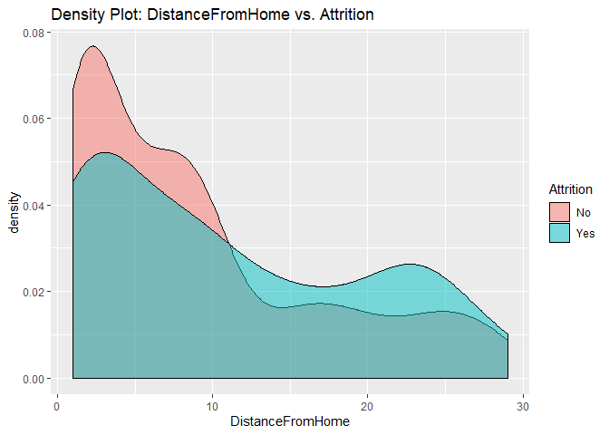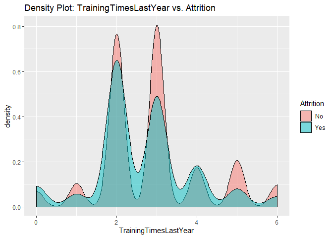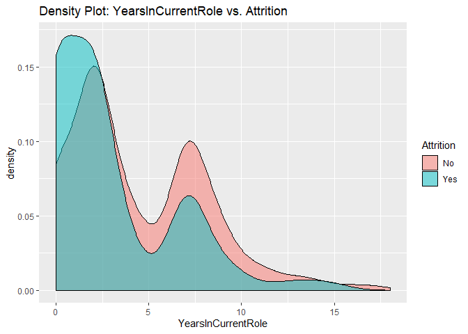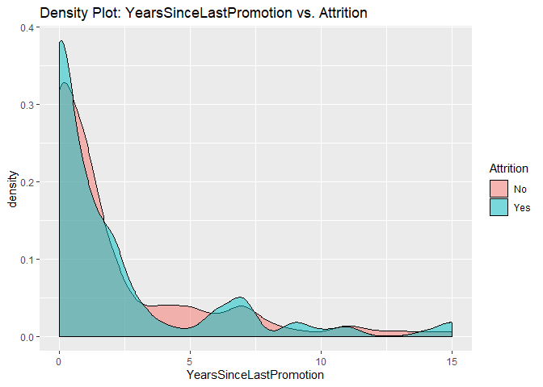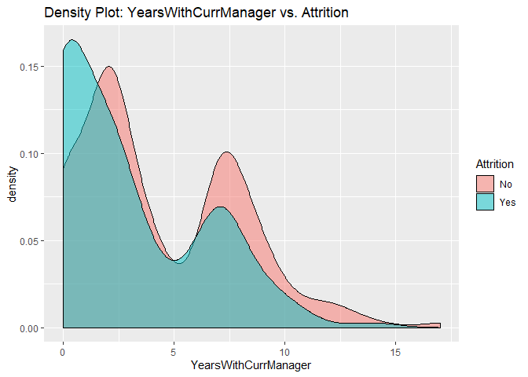
Bar charts to check numerical variables effect on attrition rate.
Bar charts indicate the attrition rate ‘Yes’ has a relatively random distribution against these variables
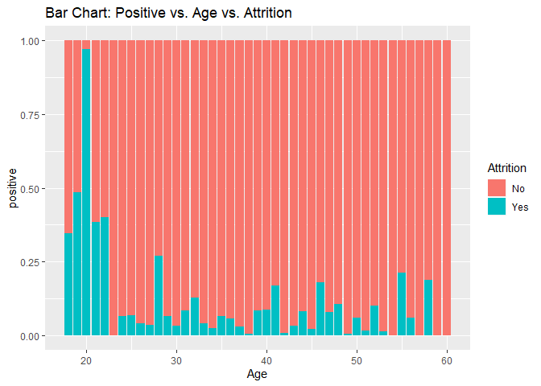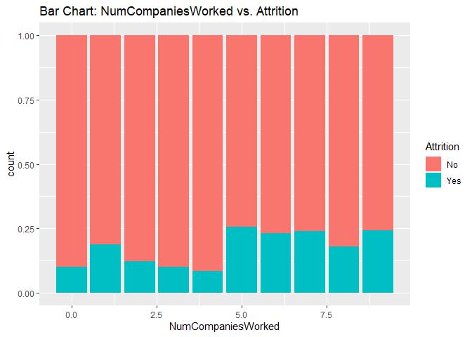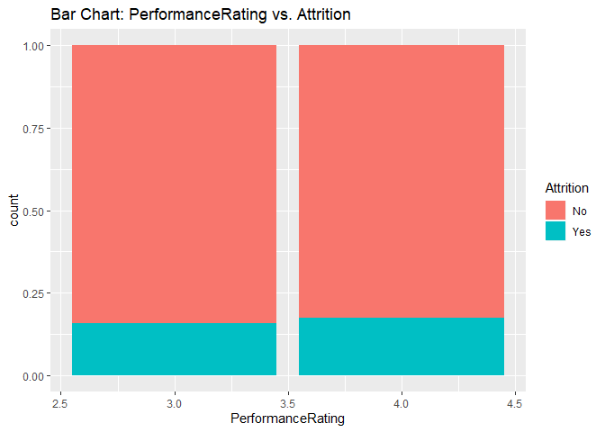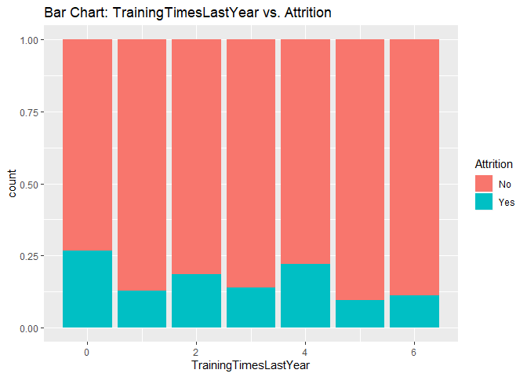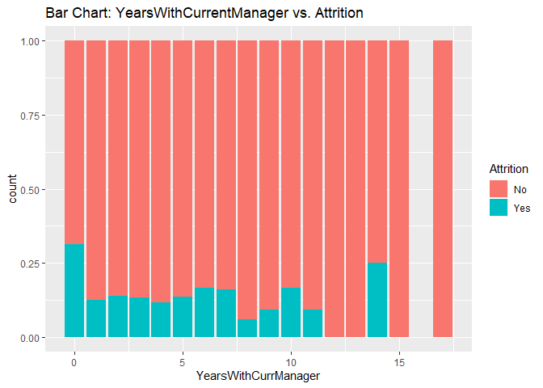
KNN model1 with over-sampling data, two predictors: Age, Positive
## [1] "KNN Model Max Mean of Sensitivity: "## [1] 0.8435887## [1] "KNN Model Max Mean of Specificity: "## [1] 0.7839081## Confusion Matrix and Statistics
##
##
## classifications No Yes
## No 77 10
## Yes 111 20
##
## Accuracy : 0.445
## 95% CI : (0.3778, 0.5136)
## No Information Rate : 0.8624
## P-Value [Acc > NIR] : 1
##
## Kappa : 0.0316
##
## Mcnemar's Test P-Value : <2e-16
##
## Sensitivity : 0.4096
## Specificity : 0.6667
## Pos Pred Value : 0.8851
## Neg Pred Value : 0.1527
## Prevalence : 0.8624
## Detection Rate : 0.3532
## Detection Prevalence : 0.3991
## Balanced Accuracy : 0.5381
##
## 'Positive' Class : No
## 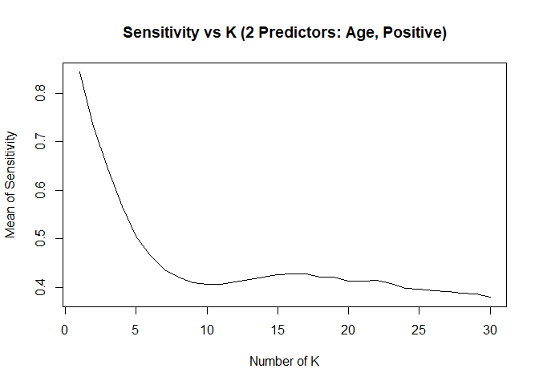
KNN model2 with over-sampling data, two predictors: Positive, TotalWorkingYears
## [1] "KNN Model Max Mean of Sensitivity: "## [1] 0.8435887## [1] "KNN Model Max Mean of Specificity: "## [1] 0.7839081## Confusion Matrix and Statistics
##
##
## classifications No Yes
## No 77 10
## Yes 111 20
##
## Accuracy : 0.445
## 95% CI : (0.3778, 0.5136)
## No Information Rate : 0.8624
## P-Value [Acc > NIR] : 1
##
## Kappa : 0.0316
##
## Mcnemar's Test P-Value : <2e-16
##
## Sensitivity : 0.4096
## Specificity : 0.6667
## Pos Pred Value : 0.8851
## Neg Pred Value : 0.1527
## Prevalence : 0.8624
## Detection Rate : 0.3532
## Detection Prevalence : 0.3991
## Balanced Accuracy : 0.5381
##
## 'Positive' Class : No
## 
KNN Model Summary
- Only numeric variables can be used as predictors in KNN model.
- KNN model can provide high sensitivity or high specificity separately, with different K
- Changing seed number or split percentage would throw impact on sensitivity / specificity as well
- With specific seed number and split percentage, KNN model can meet project requirements of 60%+ on both sensitivity and specificity on test set. However the same model can’t achieve that accurate prediction results if we change to use a new test set.
- A more robust model need to be created for better prediction.
Build Random Forest Model
over-sampling data set
##
## No Yes
## 553 99##
## No Yes
## 0.8481595 0.1518405##
## No Yes
## 553 553##
## Call:
## randomForest(x = over[, c(2, 4, 16, 24, 29)], y = as.factor(over[, 3]), ntree = 2000, importance = TRUE)
## Type of random forest: classification
## Number of trees: 2000
## No. of variables tried at each split: 2
##
## OOB estimate of error rate: 13.56%
## Confusion matrix:
## No Yes class.error
## No 451 102 0.18444846
## Yes 48 505 0.08679928## Sensitivity Specificity
## 0.8135593 0.6097561## Sensitivity Specificity
## 0.8517179 0.9292929## Sensitivity Specificity
## 0.8424658 0.8357143## Sensitivity Specificity
## 0.8517179 0.9330922Random Forest Model Summary
- 75% sensitivity and 63.4% specificity achieved on test set the same time
- 88% / 98% on train set
- 85% / 88% on original whole set (train + test)
- Both numeric and categorical variables can be used in Random Forest Model as predictors.
TASK 2:
Dataset: CaseStudy2CompSet No Attrition.csv
Provide a model that will attain at least 60% sensitivity and specificity (60 each = 120 total) for the training and the validation set, provide the labels (ordered by ID) in a csv file.
Model used for Task2 is the Random Forest Model
## 'data.frame': 300 obs. of 36 variables:
## $ ID : int 1171 1172 1173 1174 1175 1176 1177 1178 1179 1180 ...
## $ Age : int 35 33 26 55 29 51 52 39 31 31 ...
## $ Attrition : Factor w/ 1 level "": 1 1 1 1 1 1 1 1 1 1 ...
## $ BusinessTravel : Factor w/ 3 levels "Non-Travel","Travel_Frequently",..: 3 3 3 3 3 2 1 3 3 2 ...
## $ DailyRate : int 750 147 1330 1311 1246 1456 585 1387 1062 534 ...
## $ Department : Factor w/ 3 levels "Human Resources",..: 2 1 2 2 3 2 3 2 2 2 ...
## $ DistanceFromHome : int 28 2 21 2 19 1 29 10 24 20 ...
## $ Education : int 3 3 3 3 3 4 4 5 3 3 ...
## $ EducationField : Factor w/ 6 levels "Human Resources",..: 2 1 4 2 2 4 2 4 4 2 ...
## $ EmployeeCount : int 1 1 1 1 1 1 1 1 1 1 ...
## $ EmployeeNumber : int 1596 1207 1107 505 1497 145 2019 1618 1252 587 ...
## $ EnvironmentSatisfaction : int 2 2 1 3 3 1 1 2 3 1 ...
## $ Gender : Factor w/ 2 levels "Female","Male": 2 2 2 1 2 1 2 2 1 2 ...
## $ HourlyRate : int 46 99 37 97 77 30 40 76 96 66 ...
## $ JobInvolvement : int 4 3 3 3 2 2 3 3 2 3 ...
## $ JobLevel : int 2 1 1 4 2 3 1 2 2 3 ...
## $ JobRole : Factor w/ 9 levels "Healthcare Representative",..: 3 2 3 4 8 1 9 5 1 1 ...
## $ JobSatisfaction : int 3 3 3 4 3 1 4 1 1 3 ...
## $ MaritalStatus : Factor w/ 3 levels "Divorced","Married",..: 2 2 1 3 1 3 1 2 3 2 ...
## $ MonthlyIncome : int 3407 3600 2377 16659 8620 7484 3482 5377 6812 9824 ...
## $ MonthlyRate : int 25348 8429 19373 23258 23757 25796 19788 3835 17198 22908 ...
## $ NumCompaniesWorked : int 1 1 1 2 1 3 2 2 1 3 ...
## $ Over18 : Factor w/ 1 level "Y": 1 1 1 1 1 1 1 1 1 1 ...
## $ OverTime : Factor w/ 2 levels "No","Yes": 1 1 1 2 1 1 1 1 1 1 ...
## $ PercentSalaryHike : int 17 13 20 13 14 20 15 13 19 12 ...
## $ PerformanceRating : int 3 3 4 3 3 4 3 3 3 3 ...
## $ RelationshipSatisfaction: int 4 4 3 3 3 3 2 4 2 1 ...
## $ StandardHours : int 80 80 80 80 80 80 80 80 80 80 ...
## $ StockOptionLevel : int 2 1 1 0 2 0 2 3 0 0 ...
## $ TotalWorkingYears : int 10 5 1 30 10 23 16 10 10 12 ...
## $ TrainingTimesLastYear : int 3 2 0 2 3 1 3 3 2 2 ...
## $ WorkLifeBalance : int 2 3 2 3 3 2 2 3 3 3 ...
## $ YearsAtCompany : int 10 5 1 5 10 13 9 7 10 1 ...
## $ YearsInCurrentRole : int 9 4 1 4 7 12 8 7 9 0 ...
## $ YearsSinceLastPromotion : int 6 1 0 1 0 12 0 7 1 0 ...
## $ YearsWithCurrManager : int 8 4 0 2 4 8 0 7 8 0 ...TASK 3:
Provide a model that will attain a RMSE < $3000 for the training and the validation set, provide the predicted salaries (ordered by ID) in a csv file.
## [1] "Correlation test: MonthlyIncome vs. JobLevel: "##
## Pearson's product-moment correlation
##
## data: EmployeeDF$MonthlyIncome and EmployeeDF$JobLevel
## t = 91.262, df = 868, p-value < 2.2e-16
## alternative hypothesis: true correlation is not equal to 0
## 95 percent confidence interval:
## 0.9449434 0.9575400
## sample estimates:
## cor
## 0.95164## [1] "Correlation test: MonthlyIncome vs. TotalWorkingYears: "##
## Pearson's product-moment correlation
##
## data: EmployeeDF$MonthlyIncome and EmployeeDF$TotalWorkingYears
## t = 36.544, df = 868, p-value < 2.2e-16
## alternative hypothesis: true correlation is not equal to 0
## 95 percent confidence interval:
## 0.7509003 0.8034053
## sample estimates:
## cor
## 0.7785112## [1] "Linear Regression Model: "##
## Call:
## lm(formula = MonthlyIncome ~ JobLevel + TotalWorkingYears + JobLevel *
## TotalWorkingYears, data = EmployeeDF)
##
## Residuals:
## Min 1Q Median 3Q Max
## -5262.0 -774.3 -68.4 666.1 4120.1
##
## Coefficients:
## Estimate Std. Error t value Pr(>|t|)
## (Intercept) -414.449 174.794 -2.371 0.018 *
## JobLevel 3023.724 98.455 30.712 < 2e-16 ***
## TotalWorkingYears -63.901 15.870 -4.027 6.15e-05 ***
## JobLevel:TotalWorkingYears 46.513 4.926 9.443 < 2e-16 ***
## ---
## Signif. codes: 0 '***' 0.001 '**' 0.01 '*' 0.05 '.' 0.1 ' ' 1
##
## Residual standard error: 1324 on 866 degrees of freedom
## Multiple R-squared: 0.9174, Adjusted R-squared: 0.9171
## F-statistic: 3204 on 3 and 866 DF, p-value: < 2.2e-16## [1] "RMSE of the model: "## [1] 1320.958Summary
Employee data set has been used in this case study. Firstly I conducted the EDA analysis with tools of data visualization, boxplots, density plots and bar charts have been used to check whether there are special pattern in the variables that contribute to the attrition rate. Then I run the correlation test to check if any strong correlation exit in between the numeric variables. After that I tried to build KNN model to predict the attrition rate, and found the imblanced data resulted in high % of sensitivity and low % of specificity, over-sampling tool has been used to re-build a new data set, and Random Forest Model is selected due to the better result on balanced data, which result in a 75% sensitivity and 63.4% specificity in the end. Then this model is used to predict the attrition rate in a new data set, 31 out of the 300 observations have been predicted as leaving company employees. Finally a linear regression model has been built and be used to predict the MonthlyIncome of employees with a new test set, JobLevel and TotalWorkingYears are two explanatory variables used in this model, together with the interaction part, all the parameters passed the t-Test with p-value smaller than 0.05, Adj R-square=0.9171, RMSE is 1320.956.